Notes · recherches · inspirations
Carnet de bord rasqsemblant mes expérimentation, références et autres déblatération conernant la production de mon mémoire de Master Arts et Tehcnologies de l'Image.

Aucune entrée ne correspond à ces filtres.